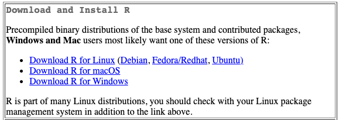
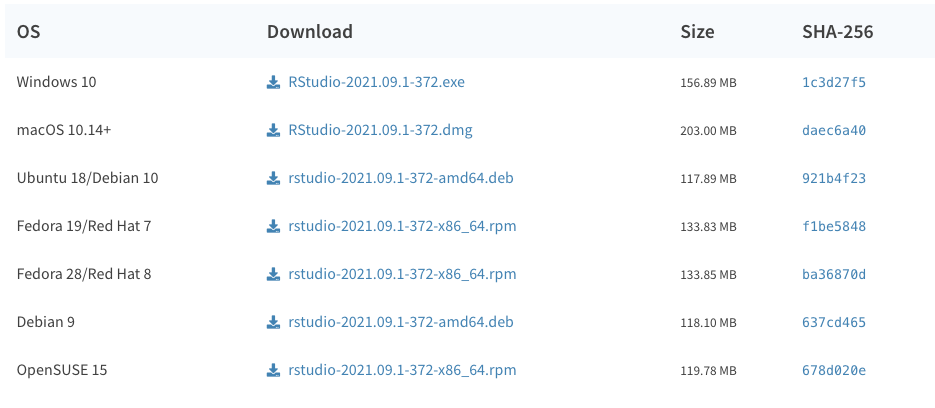
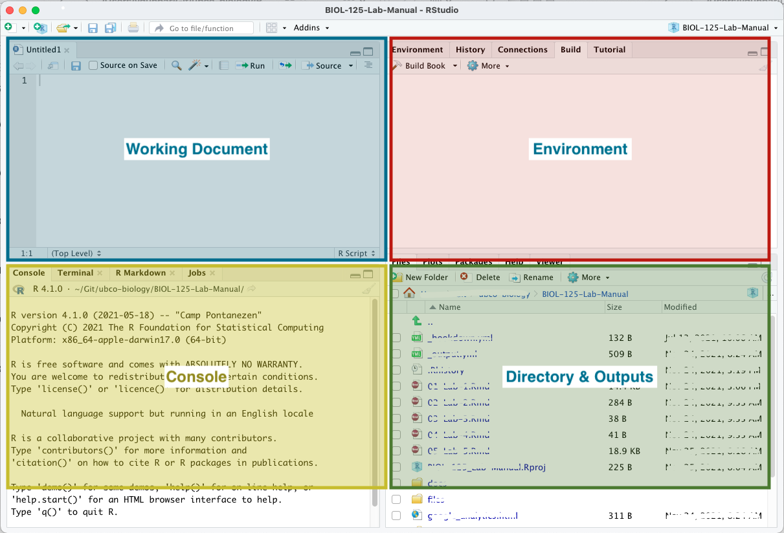
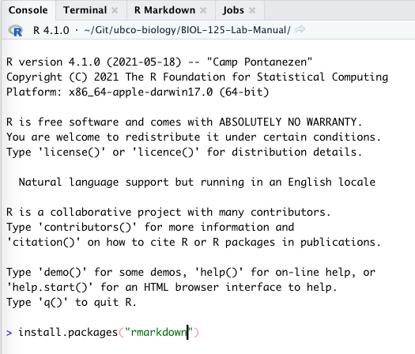

RMarkdown and RStudio
When you're writing readme files and data-dictionaries - or even taking notes in class - a text editor like VS Code is extremely convenient and versatile. When it comes to authoring reports, however, we're going to move you into RStudio.
RStudio is an IDE - an Integrated Development Environment - for R. This is just a fancy way of saying that it's an application that helps you write R code. In BIOL202 and BIOL228, you'll start using RStudio to do analyses in R. Right now, we're just using RStudio to write in RMarkdown and to get used to using the RStudio environment. Along the way, we’ll see some R code as we get things set up.
Since RStudio is designed for working with R, we need to install both R and Rstudio. So let's do this.
If you're running a Chromebook, using a tablet, or don't want to install anything new on your computer, all of the Windows computers in the library have R and RStudio installed on them.
While the tinytex package is installed on these machines, it's not loaded out of the box. So, you will need to run the following code in the console
tinytex::install_tinytex()If prompted to update the rmarkdown package, do so. There are more details on tinytex and rmarkdown in the 'Getting set up' section below.
Installing R
R is available from CRAN - the Comprehensive R Archive Network - and is available for all operating systems. Find and download the installer for your operating system at https://cran.r-project.org/. At the time of writing, the latest version is 4.1.2 Any version that is 4.x.x should be fine for what we'll be doing.

Installing RStudio
Once you have R installed, you can go ahead and install RStudio, also available for all operating systems. Find and download the installer for your operating system at https://www.rstudio.com/products/rstudio/download/#download. At the time of writing, the latest version is 2021.09.0+351 This or any later version that is published should be fine for what we’ll be doing.

A quick intro to RStudio
Your RStudio window is comprised of 4 panes.
- The upper left is where you’ll find your working documents.
- The lower left is your console. It is in the console that we can run
Rcode directly if needed. - The upper right displays information related to your working environment.
- The lower right is where you’ll see any output generated by your
Rcode, like figures, help pages etc. It’s also where you’ll see a file manager so that you can interact with your files directly from within RStudio.

For report authoring using RMarkdown, we'll mostly be concerned with the upper left pane. We'll occasionally use the console to run a bit of R. And we'll occasionally use the file manager to access files. We won't worry at all about the upper right pane - this will have more relevance when you start computing statistics in R using RStudio.
When you launch RStudio, unless you're opening an existing document, you will only see 3 panes, your console will be on the left, and your environment and output panes will be on the right.
Getting set up
Being able to convert from markdown to pdf is not something we can do with the default install of R. We need to get two add-ons to be able to do this. Add-ons in R are called packages. The first package we need to install is rmarkdown. The second is tinytex. rmarkdown handles the general process of reading through your report and getting it ready to be output to a different format. tinytex contains the necessary information to produce a pdf, so rmarkdown will use tinytex for that one part of the conversion process.
The x in tinytex is pronounced like a k, so should read more like tinytek or tinytech.
Installing Rmarkdown
Open RStudio, in the console type the following and hit 'Enter'.
install.packages("rmarkdown")You'll see a bunch of stuff written to the console. When it's all done, you'll see your prompt - > - return.

Installing tinytex
Now, in the console type the following and hit 'Enter' again.
install.packages("tinytex")When that's all done, type the following and hit 'Enter'
tinytex::install_tinytex()That's it. You should be good to go to open the .Rmd template available in the Assignment tab for this lab.